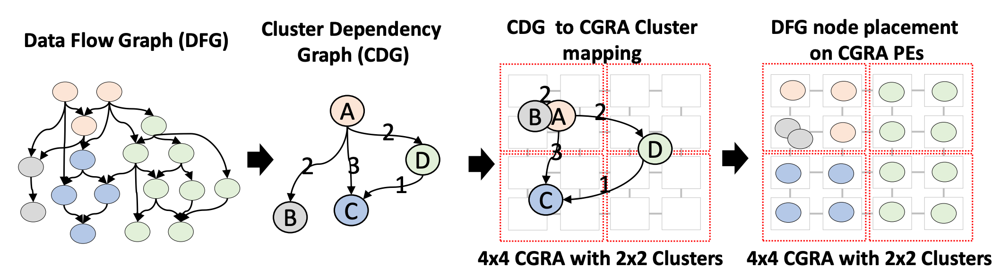
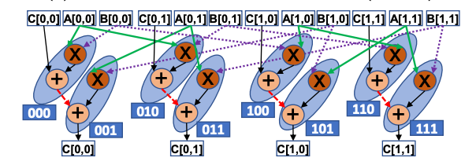
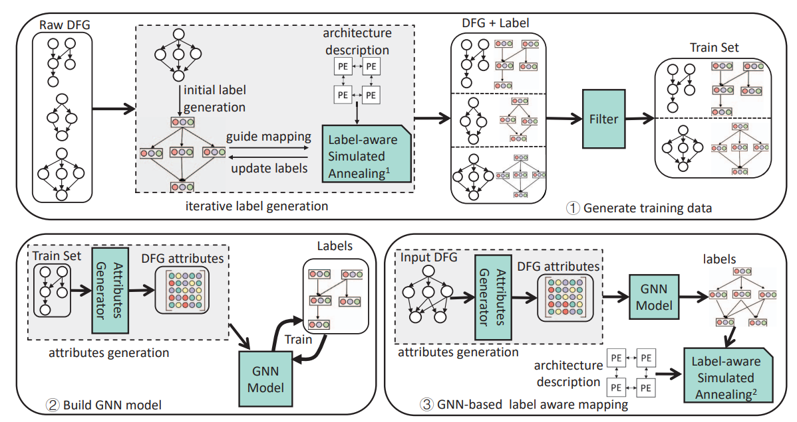
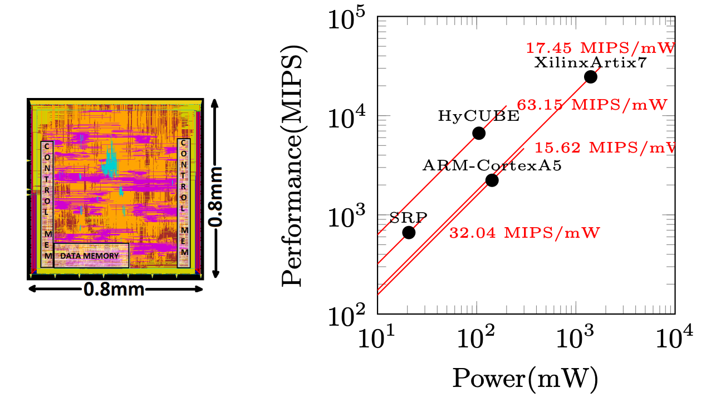
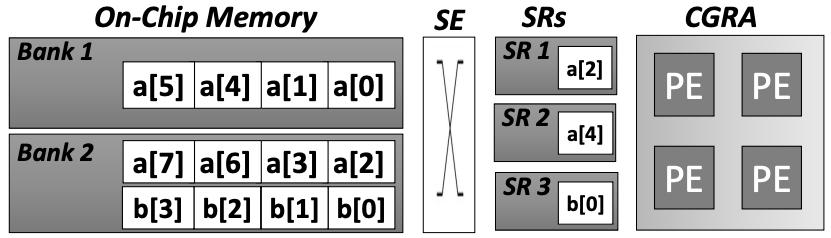
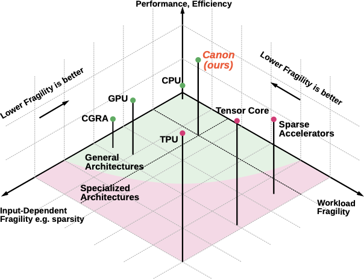
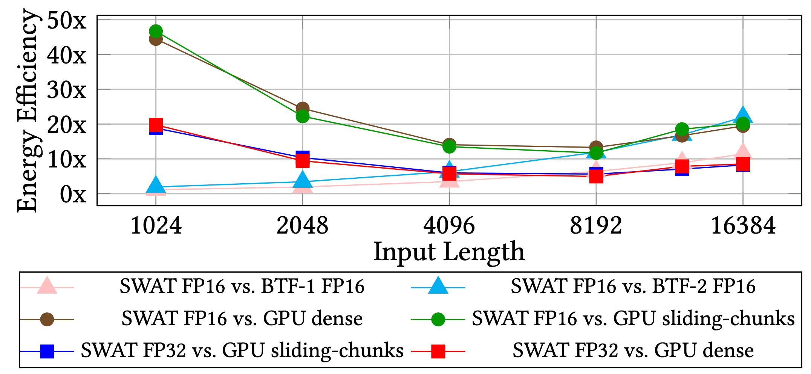
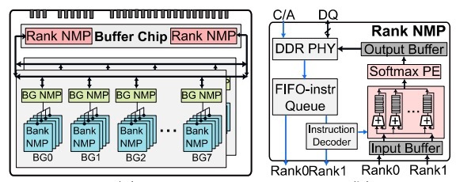

Featured Projects
Select a category to explore our work
CGRA Compiler
Since 2019, we have built a full end-to-end compiler stack for CGRAs — from front ends that take standard programs, to mapping, scheduling, placement, routing, and code generation. As our architecture research moves toward more general reconfigurable dataflow systems for AI, we are building AI-focused compilers that lower neural-network graphs to these targets.

Cluster mapping with imbalanced clusters
PANORAMA
PANORAMA introduces a divide-and-conquer approach, combining global dataflow clustering with hierarchical mapping to manage large and irregular dataflow graphs effectively. By providing a panoramic, global view of application dataflows, the compiler achieves up to 2.6× higher throughput and 8.7× faster compilation compared to state-of-the-art CGRA mappers.
PANORAMA's modular design allows seamless integration with existing low-level mapping tools, making it a portable solution for accelerating complex workloads on large CGRAs.
📄 View Publication
GEMM DFG (b = 2)

Systolic Mapping
HiMap
HiMap employs a hierarchical abstraction that leverages the regularity of multi-dimensional computations through a Virtual Systolic Array (VSA). This two-level mapping enables near-optimal performance and energy efficiency even on large CGRAs.
HiMap achieves up to 17.3× performance and 5× energy efficiency improvements over state-of-the-art methods, while reducing compilation time from days to under 15 minutes for 64×64 CGRAs.
📄 View Publication
Overview of GNN-based portable mapping framework — LISA
LISA
LISA leverages Graph Neural Networks to enable portable, high-quality mapping across diverse spatial accelerators such as CGRAs and systolic arrays. Unlike traditional handcrafted compilers, LISA automatically learns the relationship between an application's dataflow graph structure and an accelerator's architectural characteristics.
LISA significantly outperforms state-of-the-art compilers in mapping quality, compilation time, and portability, marking the first successful use of GNNs for spatial accelerator compilation.
📄 View PublicationCGRA Architecture
We design novel CGRA architectures that rethink programmable fabrics for energy-efficient, high-performance computing at the edge. Our architectures feature custom interconnects, flexible execution models, and heterogeneous design exploration.

Overview of Plaid co-designed architecture and compiler
Plaid
Plaid identifies and exploits recurring dataflow motifs within applications to enable collective execution and routing, significantly improving hardware utilization. By integrating a hierarchical on-chip network and motif-aware compiler, Plaid achieves a 43% power reduction and 46% area savings compared to high-performance spatio-temporal CGRAs.
📄 View Publication
FLEX execution model spans spatio-temporal, spatial and spatio-temporal vector dataflow
FLEX
FLEX introduces a flexible spatio-temporal vector dataflow execution model, unifying the efficiency of spatial execution with the performance of spatio-temporal designs. FLEX achieves the same performance as spatio-temporal CGRAs while consuming 45% less energy and offering 1.9× higher power efficiency.
📄 View Publication
Derived Heterogeneous Architectures
REVAMP
REVAMP is a systematic design-space exploration framework that enables architects to automatically introduce and optimize heterogeneity in traditionally homogeneous CGRAs. Demonstrated on three state-of-the-art CGRAs, REVAMP achieves up to 52.4% power, 38.1% area, and 36% average energy reduction with minimal performance loss.
📄 View Publication
(a) HyCUBE chip layout (b) Power-Performance comparison
HyCUBE
HyCUBE enables single-cycle, multi-hop communication between distant functional units through a reconfigurable interconnect, allowing efficient data movement without occupying compute resources. HyCUBE delivers up to 3× performance-per-watt improvement over conventional CGRAs.
📄 View Publication
Data transfer from multi-bank memory via SE to CGRA
CASCADE
CASCADE overcomes the data access bottleneck by fully decoupling memory access from computation. It introduces a Stream Engine for programmable multi-bank memory address generation and an automated compiler ensuring conflict-free data streaming. CASCADE delivers up to 3× performance and 2.2× performance-per-watt improvements over iso-area conventional CGRAs.
📄 View PublicationSparse AI Accelerators

3D Axis Comparison
Canon
Canon bridges the gap between highly specialized and fully programmable architectures. It introduces dynamic execution orchestration, where programmable finite-state machines translate runtime data into control, enabling fine-grained adaptation to irregular or sparse workloads. Canon matches or exceeds domain-specific accelerators while retaining general-purpose flexibility.
📄 View Publication
Comparison of storage costs of various sparse formats
ZeD
ZeD develops techniques for efficiently handling variably sparse matrices in ML workloads. Through a hierarchical bit-tree compression format and zero-detection hardware, ZeD enables compact representation and dynamic zero skipping. ZeD demonstrates a 3.2× improvement in performance per area over state-of-the-art solutions.
📄 View Publication
Energy Efficiency of SWAT against SOTA GPU and FPGA implementations
SWAT
SWAT is a scalable FPGA-based accelerator for window attention-based Transformers. Through row-major dataflow, kernel fusion, and FIFO-managed buffering, SWAT achieves a 22× latency reduction and 5.7× energy efficiency improvement over baseline FPGA accelerators, and up to 15× higher energy efficiency than GPU implementations.
📄 View Publication
SPLIM: Bridging Unstructured SpGEMM and Structured In-Situ Computing
SPLIM
SPLIM introduces the ELLPACK-based computation paradigm (ECP) for in-situ structured vector multiplication with higher hardware utilization. Compared with state-of-the-art GPU, ASIC, and PUM-based SpGEMM accelerators, SPLIM achieves 276×, 11.2×, and 3.9× performance improvement, respectively.
📄 View Publication
SADIMM: DIMM-Based Near-Memory Processing for Sparse Attention
SADIMM
SADIMM employs heterogeneous NMP architectures by integrating distinct logic units across different hierarchies of DIMM. With a dimension-based dataflow partitioning, it efficiently supports sparse attention with balanced loads and remarkable performance and energy efficiency.
📄 View Publication
ASADI: Diagonal-Based In-Situ Computing for Sparse Attention
ASADI
ASADI proposes a novel compression method for sparse attention to diagonal format and introduces DIA-based sparse matrix computation to exploit inherent diagonal locality. ASADI achieves 18.6× performance improvement and 2.9× energy savings compared to near-memory-processing baselines.
📄 View Publication
HyAtten: Hybrid Photonic-Digital Architecture for Attention
HyAtten
HyAtten is a photonic-based attention accelerator with minimal signal conversion overhead. It incorporates a signal comparator to classify signals and uses digital circuits for high-resolution signals, reducing area and latency. HyAtten achieves 9.8× improvement in performance-per-area and 2.2× increase in energy-efficiency-per-area.
📄 View Publication